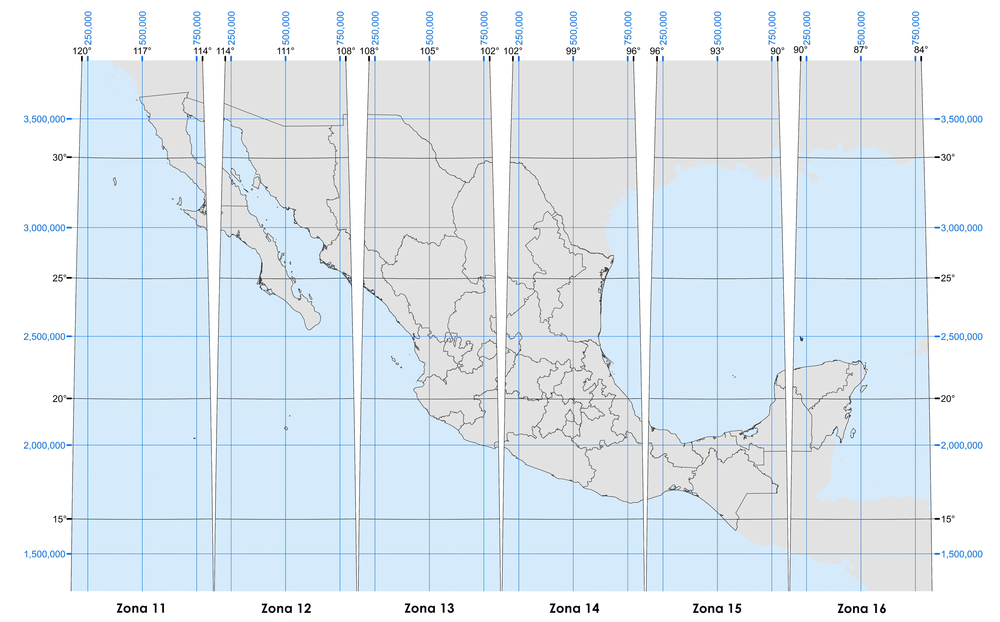

Tranformación de coordenadas
Universal Transversa de Mercator

1. Seleccionar elipsoide
"", "Clarke 1866", "GRS80", "WGS84", "Otro"
Clarke 1866
GRS80
WGS84
Otro
Ingresar el valor de los semiejes
2. Seleccionar tipo de transformación
Directa
Inversa
3. Seleccionar sistema de coordenadas
Coordenadas sexagesimales
Coordenadas decimales
Latitud:
Longitud:
Calcular
Latitud:
Longitud:
Calcular
3. Ingresar valores
Zona UTM:
Coordenada X:
Coordenada Y:
Calcular